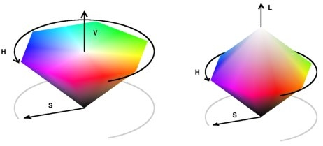
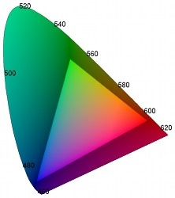
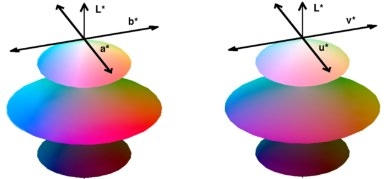

Convert between RGB, YUV, HSV, CIE Lab, …
Pascal Getreuer
This package converts colors between sRGB, Y’PbPr, Y’CbCr, JPEG-Y’CbCr, Y’UV, Y’IQ, Y’DbDr, HSV, HSL, HSI, CIE XYZ, CIE L*a*b* (CIELAB), CIE L*u*v* (CIELUV), and CIE L*ch (CIELCH), and CIE CAT02 LMS. It can be used either as C/C++ code or compiled as a Matlab MEX function.
License (BSD)
Copyright © 2005–2010, Pascal Getreuer
All rights reserved.
Redistribution and use in source and binary forms, with or without modification, are permitted provided that the following conditions are met:
Redistributions of source code must retain the above copyright notice, this list of conditions and the following disclaimer.
Redistributions in binary form must reproduce the above copyright notice, this list of conditions and the following disclaimer in the documentation and/or other materials provided with the distribution.
THIS SOFTWARE IS PROVIDED BY THE COPYRIGHT HOLDERS AND CONTRIBUTORS “AS IS” AND ANY EXPRESS OR IMPLIED WARRANTIES, INCLUDING, BUT NOT LIMITED TO, THE IMPLIED WARRANTIES OF MERCHANTABILITY AND FITNESS FOR A PARTICULAR PURPOSE ARE DISCLAIMED. IN NO EVENT SHALL THE COPYRIGHT OWNER OR CONTRIBUTORS BE LIABLE FOR ANY DIRECT, INDIRECT, INCIDENTAL, SPECIAL, EXEMPLARY, OR CONSEQUENTIAL DAMAGES (INCLUDING, BUT NOT LIMITED TO, PROCUREMENT OF SUBSTITUTE GOODS OR SERVICES; LOSS OF USE, DATA, OR PROFITS; OR BUSINESS INTERRUPTION) HOWEVER CAUSED AND ON ANY THEORY OF LIABILITY, WHETHER IN CONTRACT, STRICT LIABILITY, OR TORT (INCLUDING NEGLIGENCE OR OTHERWISE) ARISING IN ANY WAY OUT OF THE USE OF THIS SOFTWARE, EVEN IF ADVISED OF THE POSSIBILITY OF SUCH DAMAGE.
Compiling
colorspace can be used either as C/C++ code or compiled as a MATLAB MEX function.
To demonstrate colorspace for use in C programs, a small command line program colorcalc is included. The program is compiled with GCC by
gcc colorcalc.c colorspace.c -lm -o colorcalcThis should produce a command line program colorcalc that converts input sRGB values to other representations.
For use in Matlab, colorspace is compiled as a MEX function by entering
mex colorspace.con the MATLAB command console. For MEX compiling to work, your system must have a C compiler and MATLAB must be configured to use it. For more information, see the help documentation for the mex command.
As an alternative to MEX, a pure M-code version colorspace.m is also included.
Use in C/C++
First call GetColorTransform, specifying the source and destination color spaces as "dest<-src" or "src->dest". Then call ApplyColorTransform to perform the transform:
num S[3] = {173, 0.8, 0.5};
num D[3];
colortransform Trans;
if (!(GetColorTransform(&Trans, "HSI -> Lab"))) {
printf("Invalid syntax\n");
return;
}
ApplyColorTransform(Trans, &D[0], &D[1], &D[2],
S[0], S[1], S[2]);num is a typedef defined at the beginning of colorspace.h that may be set to either double or float, depending on the application.
A colortransform may be applied any number of times. To transform the color representation of an entire image, call GetColorTransform once and then call ApplyColorTransform for each pixel.
Specific transformation routines can also be called directly. The following converts an sRGB color to CIELAB and then back to sRGB:
num R = 0.85, G = 0.32, B = 0.5;
num L, a, b;
Rgb2Lab(&L, &a, &b, R, G, B);
Lab2Rgb(&R, &G, &B, L, a, b);Generally, the calling syntax is
where (S0,S1,S2) are coordinates in the source space and (D0,D1,D2) are the transformed coordinates in the destination space. For any transformation routine, its inverse has the analogous syntax.
Transform routines are named with the first letter of a color space capitalized with following letters in lower case and omitting prime symbols. For example, Rgb2Ydbdr converts sRGB to Y’DbDr.
All transformations assume a two degree observer angle and a D65 illuminant. The white point can be changed by modifying the WHITEPOINT_X, WHITEPOINT_Y, WHITEPOINT_Z definitions at the beginning of colorspace.h.
List of transformation routines:
Rgb2Yuv(num *Y, num *U, num *V,
num R, num G, num B)
Rgb2Ycbcr(num *Y, num *Cb, num *Cr,
num R, num G, num B)
Rgb2Jpegycbcr(num *Y, num *Cb, num *Cr,
num R, num G, num B)
Rgb2Ypbpr(num *Y, num *Pb, num *Pr,
num R, num G, num B)
Rgb2Ydbdr(num *Y, num *Db, num *Dr,
num R, num G, num B)
Rgb2Yiq(num *Y, num *I, num *Q,
num R, num G, num B)
Rgb2Hsv(num *H, num *S, num *V,
num R, num G, num B)
Rgb2Hsl(num *H, num *S, num *L,
num R, num G, num B)
Rgb2Hsi(num *H, num *S, num *I,
num R, num G, num B)
Rgb2Xyz(num *X, num *Y, num *Z,
num R, num G, num B)
Xyz2Lab(num *L, num *a, num *b,
num X, num Y, num Z)
Xyz2Luv(num *L, num *u, num *v,
num X, num Y, num Z)
Xyz2Lch(num *L, num *C, num *h,
num X, num Y, num Z)
Xyz2Cat02lms(num *L, num *M, num *S,
num X, num Y, num Z)
Rgb2Lab(num *L, num *a, num *b,
num R, num G, num B)
Rgb2Luv(num *L, num *u, num *v,
num R, num G, num B)
Rgb2Lch(num *L, num *C, num *h,
num R, num G, num B)
Rgb2Cat02lms(num *L, num *M, num *S,
num R, num G, num B) (Similarly for the inverse transformations.)
It is possible to transform between two arbitrary color spaces by first transforming from the source space to sRGB and then transforming from sRGB to the desired destination space. For transformations between CIE color spaces, it is convenient to use XYZ as the intermediate space. This is the strategy used by GetColorTransform and ApplyColorTransform.
Use in Matlab
B = colorspace(S,A) converts the color representation of image A where S is a string specifying the conversion. S tells the source and destination color spaces, S = 'dest<-src', or alternatively, S = 'src->dest'. Supported color spaces are
'RGB'
|
sRGB IEC 61966-2-1 |
'YPbPr'
|
Luma (ITU-R BT.601) + Chroma |
'YCbCr'
|
Luma + Chroma (digitized version of Y’PbPr) |
'JPEG-YCbCr'
|
Luma + Chroma space used in JFIF JPEG |
'YUV'
|
NTSC PAL Y’UV Luma + Chroma |
'YIQ'
|
NTSC Y’IQ Luma + Chroma |
'YDbDr'
|
SECAM Luma + Chroma |
'HSV' or 'HSB'
|
Hue Saturation Value/Brightness |
'HSL' or 'HLS'
|
Hue Saturation Luminance |
'HSI'
|
Hue Saturation Intensity |
'XYZ'
|
CIE XYZ |
'Lab'
|
CIE L*a*b* (CIELAB) |
'Luv'
|
CIE L*u*v* (CIELUV) |
'LHC'
|
CIE L*u*v* (CIELUV) |
'CAT02 LMS'
|
CIE CAT02 LMS |
All conversions assume 2 degree observer and D65 illuminant. Color space names are case insensitive. When sRGB is the source or destination, it can be omitted. For example 'yuv<-' is short for 'yuv<-rgb'.
MATLAB uses two standard data formats for sRGB: double data with intensities in the range 0 to 1, and uint8 data with integer-valued intensities from 0 to 255. colorspace expects sRGB data to be scaled between 0 and 1, and only accepts double data.
If A is an M×3 array, like a colormap, B will also have size M×3.
Typical Usage
How does one get color image data into Matlab? The function imread imports most formats as a uint8 array of size M×N×3, where the third dimension separates the R’,G’, and B’ color channels.
A = imread('boats.png'); % Import data as uint8 in the range [0,255]
A = double(A)/255; % Cast to double in the range [0,1]
% View the image
subplot(2,2,1);
image(A);
axis image(For images using palette indexing, imread instead returns an array of color indices and a colormap, so palette-based images require other handling.) To view a color image, use image or imshow. The image may either be a uint8 array with intensities in the range [0,255] or a double array with the range [0,1].
Once an sRGB array is loaded, colorspace can convert it to another color representation. To convert to Y’PbPr, for example, use
Since the resulting array B is not in sRGB representation, it no longer makes sense to visualize it as a single color image, other than transforming it back to sRGB first. Instead, view each of the channels B(:,:,1), B(:,:,2), B(:,:,3) individually as gray-scale images:
% View the individual channels
subplot(2,2,1);
imagesc(B(:,:,1));
colormap(gray(256));
axis image
title 'Y'''
subplot(2,2,3);
imagesc(B(:,:,2));
colormap(gray(256));
axis image
title 'P_b'
subplot(2,2,4);
imagesc(B(:,:,3));
colormap(gray(256));
axis image
title 'P_r'To transform B back to sRGB, use colorspace again:
Discrepancies
While of course effort has been made to make colorspace accurate and in agreement with standards, it is possible to see differences between colorspace and other color transformation software. Potential sources for discrepancy are
- differences in how the components are scaled, for example, sRGB values scaled in [0,255] vs. [0,1];
- different handling of out-of-gamut colors;
- naming confusion over similar but distinct color spaces (e.g., HSV vs. HSL vs. HSI or Y’PbPr vs. Y’UV vs. Y’IQ);
- for CIE spaces, differences in white point, observer angle, or gamma correction
- (hopefully unlikely!) a bug in
colorspace.
Transformations with colorspace assume a 2-degree observer, D65 illuminant, and using the sRGB gamma correction function described in the Gamma Correction section below.
Beware that colorspace‘s transformations generally do not constrain colors to be in-gamut. Particularly, transforming from another space to sRGB may obtain R’G’B’ values outside of the [0,1] range. In Matlab, the result should be clamped to [0,1] before displaying:
Challenges in Color Representation
Device-independent, quantitative description of color is a surprisingly challenging problem. For example, four shades of gray surrounded by black are perceived differently than the same four shades surrounded by white [1].
On black background, the lightest shade of gray seems to be almost white. But on white background, the same shade appears significantly darker. This discrepancy suggests that the perceived colors on a monitor depend on the illumination of the surrounding room. So for precise color description, color specifications include the intended viewing conditions.
The intensity of a color is defined as the watts per unit area rendered by the display device. Another problem is that even under equal intensity, some colors are visually brighter than others.
To overcome this non-uniformity, many color spaces instead consider luminance, a quantitative estimate of the perceived brightness.
Different color representations try to overcome these problems, with varying degrees of success. It is for this reason that there are so many standard color representations.
Gamma Correction
CRT monitors have a nonlinear relationship between the input voltages and the rendered intensities. To reproduce an image accurately, the image is gamma-corrected in such a way that the monitor displays the desired intensities.
In colorspace, the “RGB” space is sRGB. The sRGB space was designed in 1996 for direct display on typical CRT monitors and standardized in 1999 by International Electrotechnical Commission (IEC) as IEC 61966-2-1. The “s” in sRGB means “standard.” From linear RGB values, the sRGB values are gamma-compensated by the formula for R’
\[\begin{cases} 1.055 R^{1/2.4} - 0.055 & \text{if $R \le 0.0031308$,} \\ 12.92 R & \text{if $R > 0.0031308$,} \end{cases}\]
and similarly for G’ and B’ [4].
Standard notation denotes R’,G’,B’ quantities and derived quantities with a prime ’ to signify gamma-correction. Since gamma-correction is already applied by digital cameras as standard practice, most digital image data should be interpreted as R’G’B’, and not RGB.
Y’CbCr and other Luma+Chroma
The luma of a color is an estimate of brightness based on gamma-corrected samples. Its definition (ITU-R Recommendation BT.601-4) is
\[ Y'_\text{601} = 0.299 R' + 0.587 G' + 0.114 B'. \]
This luma measure is (up to a scale factor) the Y’ in Y’PbPr, Y’CbCr, JPEG-Y’CbCr, Y’UV, Y’IQ, and Y’DbDr. The remaining two components in each of these representations capture the chroma, the part of a color independent of luma [2].
Y’PbPr
Given R’, G’, and B’ in the range [0,1], the Y’PbPr components are
\[\begin{pmatrix}Y' \\ P_b \\ P_r\end{pmatrix} = M \begin{pmatrix}R' \\ G' \\ B'\end{pmatrix}\]
with Y’ in [0,1] and Pb, Pr in [−0.5,0.5], and where \(M\) is the 3×3 matrix
\[ \left(\begin{array}{lll} \hphantom{-}0.299 & \hphantom{-}0.587 & \hphantom{-}0.114 \\ -0.169 & -0.331 & \hphantom{-}0.5 \\ \hphantom{-}0.5 & -0.419 & -0.081 \end{array}\right). \]
\[ M = \left(\begin{array}{lll} \hphantom{-}0.299 & \hphantom{-}0.587 & \hphantom{-}0.114 \\ -0.1687367 & -0.331264 & \hphantom{-}0.5 \\ \hphantom{-}0.5 & -0.418688 & -0.081312 \end{array}\right). \]
Y’CbCr
Y’CbCr, also called YCC, is a rescaling of Y’PbPr such that components can be stored as 8-bit unsigned values. Given R’, G’, and B’ in the range [0,1],
\[\begin{pmatrix}Y' \\ C_b \\ C_r\end{pmatrix} = \begin{pmatrix}16 \\ 128 \\ 128\end{pmatrix} + 219 M \begin{pmatrix}R' \\ G' \\ B'\end{pmatrix}\]
where matrix \(M\) is as in Y’PbPr and with Y’ in [16,235] and Cb, Cr in [16,240].
JPEG-Y’CbCr
JPEG-Y’CbCr is another rescaling of Y’PbPr, used in the JPEG image format,
\[\begin{pmatrix}Y' \\ C_b \\ C_r\end{pmatrix} = \begin{pmatrix}0 \\ 0.5 \\ 0.5\end{pmatrix} + M \begin{pmatrix}R' \\ G' \\ B'\end{pmatrix}\]
where matrix \(M\) is as in Y’PbPr and with Y’, Cb, Cr in [0,1].
HSV, HSL, and HSI
The Hue Saturation Value/Brightness (HSV/HSB) is an intuitive color system, measuring the hue of a color as the angle on the HSV color wheel, the saturation as the color’s vibrancy, and the color’s value or approximate brightness.
HSV is related to sRGB by
\[ \begin{aligned} H &= \text{hexagonal hue angle}, \\ S &= C/V, \\ V &= \max(R',G',B'), \end{aligned} \]
where \(0 \le H < 360\), \(0 \le S \le 1\), \(0 \le V \le 1\), and \(C = \max(R',G',B') - \min(R',G',B')\). The hue angle H is computed on a hexagon. The space is geometrically a hexagonal cone.
The Hue Saturation Lightness (HSL or HLS) color space, has the same definition for color hue as HSV. The other two components differ such that all colors tend to white as lightness increases.
HSL is related to sRGB by
\[\begin{aligned} H &= \text{hexagonal hue angle}, \\ S &= C/(1 - |2L - 1|), \\ L &= \tfrac{1}{2}\bigl( \max(R',G',B') \\ & \qquad + \min(R',G',B')\bigr), \end{aligned}\]
where \(0\le S \le 1\) and \(0 \le L \le 1\) and with H and C as in HSV. Geometrically, the space is a double hexagonal cone.

The HSV and HSL color spaces (colorspace_demo.m).
A third related space is Hue Saturation Intensity (HSI), popular in computer vision. HSI is related to sRGB by
\[\begin{aligned} H &= \text{polar hue angle}, \\ S &= 1 - \min(R',G',B')/I, \\ I &= \tfrac{1}{3}(R'+G'+B'), \\ \end{aligned}\]
with \(0 \le H < 360\), \(0 \le S \le 1\), \(0\le I \le 1\). Unlike HSV and HSL, the hue angle H is computed on a circle rather than a hexagon.
The HSV, HSL, and HSI systems are ambiguous on whether components should be based on RGB or gamma-corrected sRGB, and specify no white point. When truly device-independent color reproduction is necessary, it is better to use a CIE color space [2].
CIE Standard Color Spaces
In 1931, the Commission Internationale de L’Éclairage (CIE) defined a standard color system for precise color reproduction called XYZ. The XYZ color space has a linear relationship with non-gamma-corrected RGB [2]:
\[\begin{pmatrix}R \\ G \\ B\end{pmatrix} = \left(\begin{array}{lll} \hphantom{-}3.240479 & -1.53715 & -0.498535 \\ -0.969256 & \hphantom{-}1.875992 & \hphantom{-}0.041556 \\ \hphantom{-}0.055648 & -0.204043 & \hphantom{-}1.057311 \end{array}\right) \times \begin{pmatrix}X \\ Y \\ Z\end{pmatrix}\]
The closely-related xyY space defines the chromaticity coordinates,
\[ x = \frac{X}{X+Y+Z}, \quad y = \frac{Y}{X+Y+Z}. \]

CIE “tongue”: region of all colors over x and y (colorspace_ciedemo.m).
In the figure, the U-shaped boundary is parameterized by light wavelength. The triangular region corresponds to the sRGB space, the range of colors that a typical computer monitor can display.
XYZ is the foundation of the L*a*b* (CIELAB), L*u*v* (CIELUV), and L*ch color spaces. Let Xn,Yn,Zn be the XYZ values of a reference white point. The white point in colorspace is the standard D65 white point, Xn = 0.950456, Yn = 1, Zn = 1.088754. The lightness, denoted by L* in each of these spaces, is defined as
\[\begin{cases} 116 (Y/Y_n)^{1/3} - 16 & \text{if $Y/Y_n > (\tfrac{6}{29})^3$,} \\ (Y/Y_n - \tfrac{4}{29}) \tfrac{108}{841} & \text{otherwise.} \end{cases}\]
The white point has lightness 100, and provided \(0 \le Y \le Y_n\), L* is in the range [0,100].
The other two components in each representation describe the chromaticity. L*a*b* and L*u*v* both attempt to “perceptually linearize” chromaticity, meaning that changes in color values correspond to proportional changes in visual importance. L*ch is L*a*b* with chromaticity expressed in polar coordinates.

Visualizations of the L*a*b* and L*u*v* color spaces (colorspace_demo.m).
Accuracy Test
To verify the invertibility of the color transformations, this test transforms sRGB data to a space, inverts, and compares with the original data.
N = 1e5; % Number of points to test
A = rand(N,3); % Generate points uniformly in sRGB colorspace
Space = {'YPbPr','YCbCr','JPEG-YCbCr','YDbDr','YIQ','YUV','HSV',...
'HSL','HSI','XYZ','Lab','Luv','LCH','CAT02LMS'};
fprintf('\n Transform RMSE Error Max Error\n\n');
for k = 1:length(Space)
B = colorspace([Space{k} '<-RGB'],A); % Convert to Space{k}
R = colorspace(['RGB<-' Space{k}],B); % Convert back to sRGB
RMSE = sqrt(mean((A(:) - R(:)).^2));
MaxError = max(abs(A(:) - R(:)));
fprintf(' RGB<->%-10s %9.2e %9.2e\n', ...
Space{k}, RMSE, MaxError);
endCode output:
Transform RMSE Error Max Error
RGB<->YPbPr 9.07e-017 4.44e-016
RGB<->YCbCr 1.06e-016 5.55e-016
RGB<->JPEG-YCbCr 1.06e-016 5.55e-016
RGB<->YDbDr 8.72e-017 4.44e-016
RGB<->YIQ 8.17e-017 4.44e-016
RGB<->YUV 6.99e-017 3.54e-016
RGB<->HSV 7.28e-017 1.22e-015
RGB<->HSL 8.06e-017 1.22e-015
RGB<->HSI 1.10e-016 7.77e-016
RGB<->XYZ 2.30e-016 6.36e-015
RGB<->Lab 1.09e-015 2.10e-014
RGB<->Luv 7.98e-016 2.00e-014
RGB<->LCH 1.11e-015 2.39e-014
RGB<->CAT02 LMS 8.29e-016 1.30e-014Transformations are accurate to machine precision. The first six spaces, being linearly related to sRGB, have higher accuracy than the nonlinearly-related spaces.
References
C. Poynton. “Frequently Asked Questions about Gamma.” 1998.
C. Poynton. “Frequently Asked Questions about Color.” 1997.
J. Burkardt. “COLORS - Color Coordinate Conversion.” (FORTRAN code.) 2002.
Wikipedia: “sRGB”
Wikipedia: “YUV”
Wikipedia: “YCbCr”
Wikipedia: “YPbPr”
Wikipedia: “YDbDr”
Wikipedia: “YIQ”
Wikipedia: “HSL and HSV”
Wikipedia: “CIE 1931 color space”
Wikipedia: “Lab color space”
Wikipedia: “CIELUV color space”
Wikipedia: “LMS color space”
This material is based upon work supported by the National Science Foundation under Award No. DMS-1004694. Any opinions, findings, and conclusions or recommendations expressed in this material are those of the author(s) and do not necessarily reflect the views of the National Science Foundation.